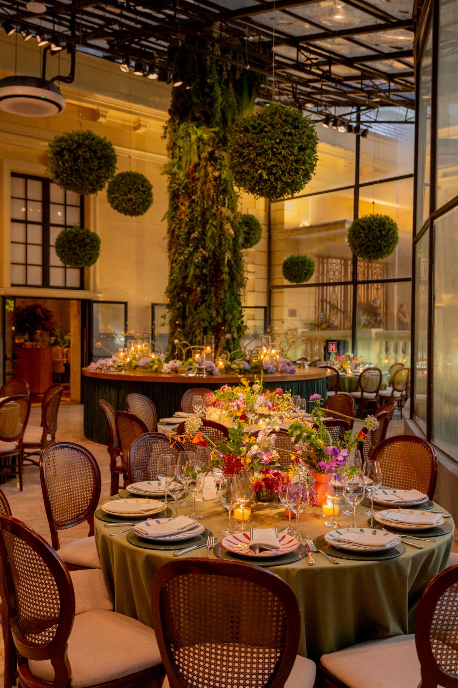
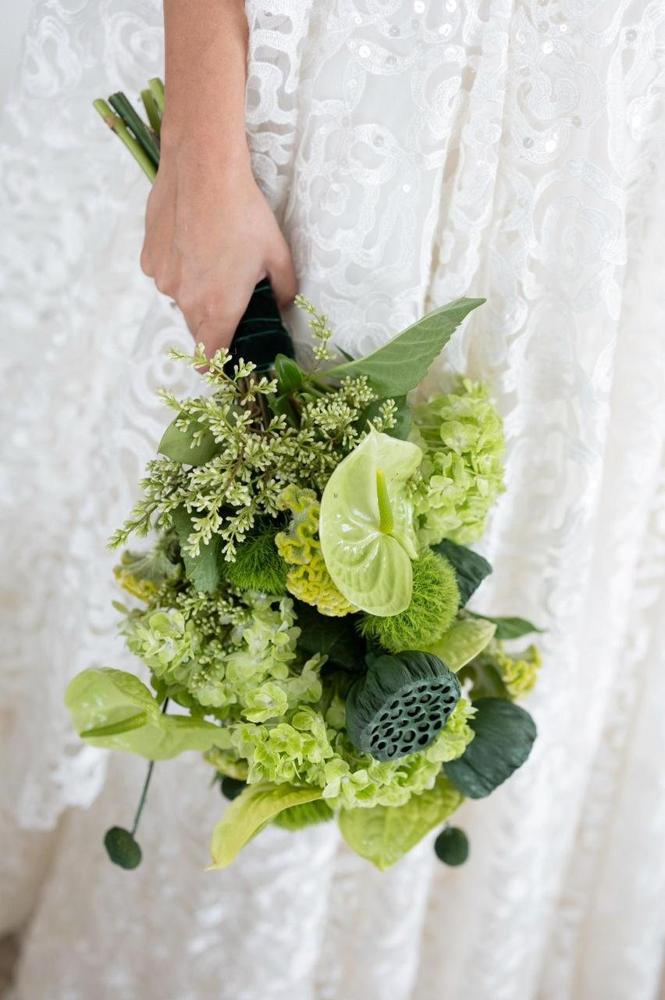

Hípica Paulista· Foto Thalita Tavares
Arquitetura, flores e festas
Cada festa começa como um projeto.
E as flores ocupam o centro dele. Desenho, luz e flores pensados juntos, do primeiro encontro à montagem.
Laís e Pri
Duas irmãs, cada festa do começo ao fim.
Laís é arquiteta e cenógrafa, apaixonada por flores e festas. Com a Pri, conduz cada projeto do primeiro encontro à montagem.
Por trás, a casa Rubens: ateliê, equipe e flores.
Festas
Ver todas no Instagram


Casa Charlô· Foto Maíra Preto
Bouquets
Desenhados junto com a festa.
As mesmas flores do projeto, na mão da noiva.

Como começa
i. Conversa
Um encontro para entender a festa, o lugar e quem vai recebê-la.
ii. Projeto
Desenho, flores e luz apresentados antes de tudo.
iii. Prova de flores
As flores escolhidas de perto, no ateliê.
iv. Montagem
A equipe da casa monta a festa no dia.
Vamos conversar sobre a sua festa.
Escrever para a LaísTelefone
+55 11 3815-3888Ateliê
Rua Baumann, 1.484
Vila Leopoldina · São Paulo
laís aguiar
Uma casa Rubens · São Paulo